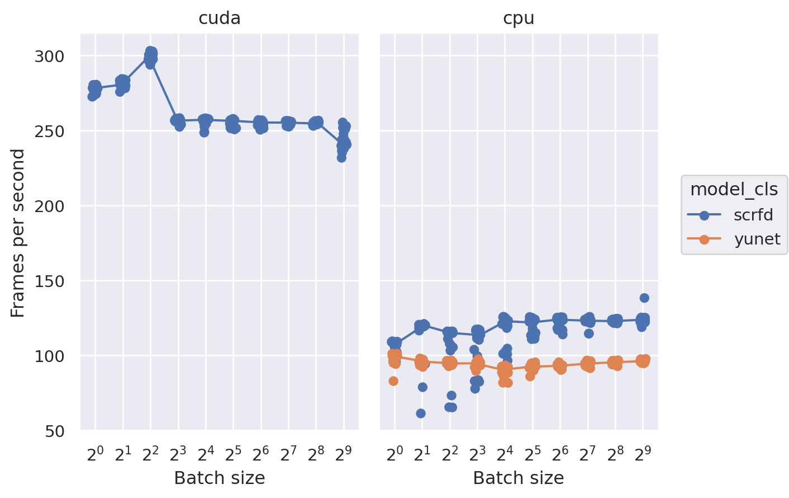
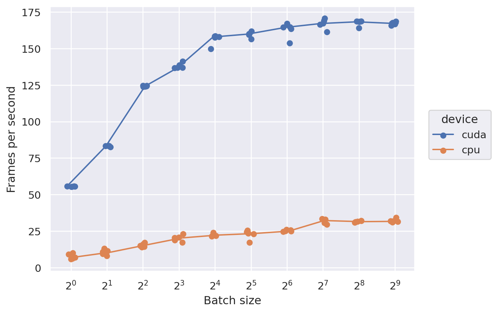

Speed benchmarks#
import torch
from medusa.benchmark import FancyTimer
from medusa.detect import SCRFDetector, YunetDetector
torch.set_grad_enabled(False)
timer_ = FancyTimer()
params = {
"model_cls": [SCRFDetector, YunetDetector],
"device": ['cuda', "cpu"],
"batch_size": [1, 2, 4, 8, 16, 32, 64, 128, 256, 512]
}
from medusa.data import get_example_image
for p in timer_.iter(params):
if p["model_cls"] == YunetDetector and p["device"] == "cuda":
continue
model = p["model_cls"](device=p["device"])
img = get_example_image(device=p["device"])
img = img.repeat(p["batch_size"], 1, 1, 1)
with torch.inference_mode():
timer_.time(model, [img], n_warmup=3, repeats=20, params=p)
torch.cuda.empty_cache()
df_detect = timer_.to_df()
0%| | 0/40 [00:00<?, ?it/s]
2%|███▍ | 1/40 [00:02<01:54, 2.93s/it]
5%|██████▊ | 2/40 [00:03<00:51, 1.35s/it]
8%|██████████▎ | 3/40 [00:03<00:33, 1.10it/s]
10%|█████████████▋ | 4/40 [00:04<00:31, 1.15it/s]
12%|█████████████████▏ | 5/40 [00:05<00:38, 1.10s/it]
15%|████████████████████▌ | 6/40 [00:08<00:58, 1.73s/it]
18%|███████████████████████▉ | 7/40 [00:14<01:41, 3.08s/it]
20%|███████████████████████████▍ | 8/40 [00:26<03:05, 5.80s/it]
22%|██████████████████████████████▊ | 9/40 [00:49<05:48, 11.23s/it]
25%|██████████████████████████████████ | 10/40 [01:38<11:23, 22.77s/it]
28%|█████████████████████████████████████▍ | 11/40 [01:38<07:41, 15.91s/it]
30%|████████████████████████████████████████▊ | 12/40 [01:38<05:14, 11.22s/it]
32%|████████████████████████████████████████████▏ | 13/40 [01:39<03:39, 8.13s/it]
35%|███████████████████████████████████████████████▌ | 14/40 [01:41<02:42, 6.23s/it]
38%|███████████████████████████████████████████████████ | 15/40 [01:45<02:13, 5.33s/it]
40%|██████████████████████████████████████████████████████▍ | 16/40 [01:51<02:14, 5.62s/it]
42%|█████████████████████████████████████████████████████████▊ | 17/40 [02:03<02:55, 7.63s/it]
45%|█████████████████████████████████████████████████████████████▏ | 18/40 [02:28<04:38, 12.66s/it]
48%|████████████████████████████████████████████████████████████████▌ | 19/40 [03:16<08:11, 23.40s/it]
50%|████████████████████████████████████████████████████████████████████ | 20/40 [04:51<14:59, 44.97s/it]
78%|█████████████████████████████████████████████████████████████████████████████████████████████████████████▍ | 31/40 [04:52<01:11, 7.92s/it]
80%|████████████████████████████████████████████████████████████████████████████████████████████████████████████▊ | 32/40 [04:52<00:57, 7.20s/it]
82%|████████████████████████████████████████████████████████████████████████████████████████████████████████████████▏ | 33/40 [04:53<00:45, 6.45s/it]
85%|███████████████████████████████████████████████████████████████████████████████████████████████████████████████████▌ | 34/40 [04:55<00:34, 5.78s/it]
88%|███████████████████████████████████████████████████████████████████████████████████████████████████████████████████████ | 35/40 [04:59<00:27, 5.49s/it]
90%|██████████████████████████████████████████████████████████████████████████████████████████████████████████████████████████▍ | 36/40 [05:07<00:23, 5.99s/it]
92%|█████████████████████████████████████████████████████████████████████████████████████████████████████████████████████████████▊ | 37/40 [05:23<00:24, 8.18s/it]
95%|█████████████████████████████████████████████████████████████████████████████████████████████████████████████████████████████████▏ | 38/40 [05:55<00:27, 13.73s/it]
98%|████████████████████████████████████████████████████████████████████████████████████████████████████████████████████████████████████▌ | 39/40 [06:56<00:26, 26.03s/it]
100%|████████████████████████████████████████████████████████████████████████████████████████████████████████████████████████████████████████| 40/40 [08:59<00:00, 51.79s/it]
100%|████████████████████████████████████████████████████████████████████████████████████████████████████████████████████████████████████████| 40/40 [08:59<00:00, 13.48s/it]
import seaborn.objects as so
df_detect['BPS'] = 1 / df_detect['duration']
df_detect['FPS'] = df_detect['BPS'] * df_detect['batch_size']
(
so.Plot(df_detect, x='batch_size', y='FPS', color='model_cls')
.facet(col="device")
.share(y=True, x=True)
.add(so.Dot(), so.Jitter(.3))
.add(so.Line(), so.Est('median', errorbar='sd'), so.Jitter(.3))
.scale(
x=so.Continuous(trans="log2").tick(count=len(params['batch_size']), between=(1, max(params['batch_size']))),
#y=so.Continuous(trans='log')
)
.label(
x="Batch size", y="Frames per second"
)
)

import torch
from medusa.recon import DecaReconModel
timer_ = FancyTimer()
params = {
"device": ['cuda', "cpu"],
"batch_size": [1, 2, 4, 8, 16, 32, 64, 128, 256, 512]
}
for p in timer_.iter(params):
model = DecaReconModel(name='emoca-coarse', device=p["device"])
img = get_example_image(device=p["device"])
img = img.repeat(p["batch_size"], 1, 1, 1)
with torch.inference_mode():
timer_.time(model, [img], n_warmup=3, repeats=5, params=p)
torch.cuda.empty_cache()
df_recon = timer_.to_df()
0%| | 0/20 [00:00<?, ?it/s]
5%|██████▊ | 1/20 [00:01<00:28, 1.52s/it]
10%|█████████████▋ | 2/20 [00:03<00:27, 1.53s/it]
15%|████████████████████▌ | 3/20 [00:04<00:26, 1.53s/it]
20%|███████████████████████████▍ | 4/20 [00:06<00:25, 1.61s/it]
25%|██████████████████████████████████▎ | 5/20 [00:08<00:26, 1.75s/it]
30%|█████████████████████████████████████████ | 6/20 [00:11<00:29, 2.08s/it]
35%|███████████████████████████████████████████████▉ | 7/20 [00:15<00:36, 2.84s/it]
40%|██████████████████████████████████████████████████████▊ | 8/20 [00:22<00:51, 4.26s/it]
45%|█████████████████████████████████████████████████████████████▋ | 9/20 [00:36<01:18, 7.16s/it]
50%|████████████████████████████████████████████████████████████████████ | 10/20 [01:01<02:08, 12.88s/it]
55%|██████████████████████████████████████████████████████████████████████████▊ | 11/20 [01:05<01:28, 9.88s/it]
60%|█████████████████████████████████████████████████████████████████████████████████▌ | 12/20 [01:07<01:01, 7.67s/it]
65%|████████████████████████████████████████████████████████████████████████████████████████▍ | 13/20 [01:10<00:44, 6.35s/it]
70%|███████████████████████████████████████████████████████████████████████████████████████████████▏ | 14/20 [01:15<00:34, 5.76s/it]
75%|██████████████████████████████████████████████████████████████████████████████████████████████████████ | 15/20 [01:22<00:30, 6.10s/it]
80%|████████████████████████████████████████████████████████████████████████████████████████████████████████████▊ | 16/20 [01:34<00:31, 7.98s/it]
85%|███████████████████████████████████████████████████████████████████████████████████████████████████████████████████▌ | 17/20 [01:56<00:36, 12.06s/it]
90%|██████████████████████████████████████████████████████████████████████████████████████████████████████████████████████████▍ | 18/20 [02:31<00:37, 18.96s/it]
95%|█████████████████████████████████████████████████████████████████████████████████████████████████████████████████████████████████▏ | 19/20 [03:37<00:33, 33.25s/it]
100%|████████████████████████████████████████████████████████████████████████████████████████████████████████████████████████████████████████| 20/20 [05:45<00:00, 61.72s/it]
100%|████████████████████████████████████████████████████████████████████████████████████████████████████████████████████████████████████████| 20/20 [05:45<00:00, 17.29s/it]
df_recon['BPS'] = 1 / df_recon['duration']
df_recon['FPS'] = df_recon['BPS'] * df_recon['batch_size']
(
so.Plot(df_recon, x='batch_size', y='FPS', color='device')
.add(so.Dot(), so.Jitter(.3))
.add(so.Line(), so.Est('median', errorbar=('ci', 99.99)), so.Jitter(.3))
.scale(
x=so.Continuous(trans="log2").tick(count=len(params['batch_size']), between=(1, max(params['batch_size']))),
)
.label(
x="Batch size", y="Frames per second"
)
)
